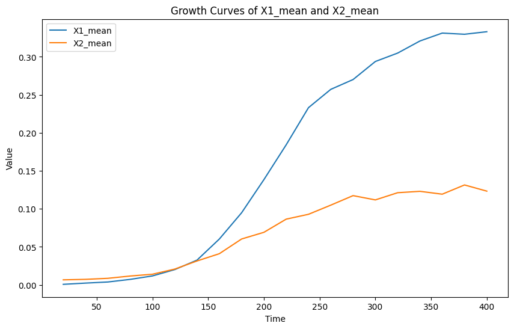
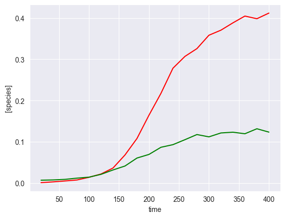
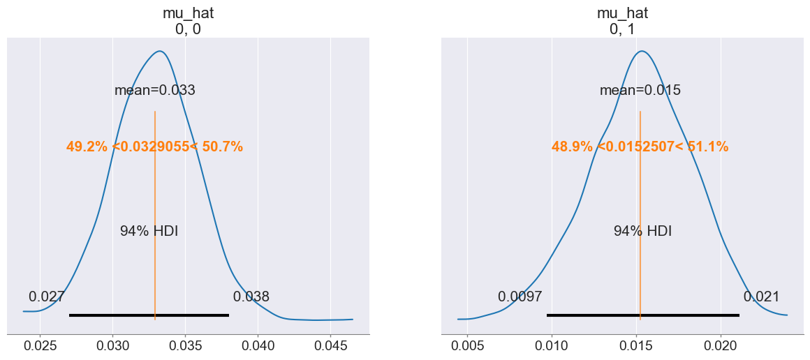
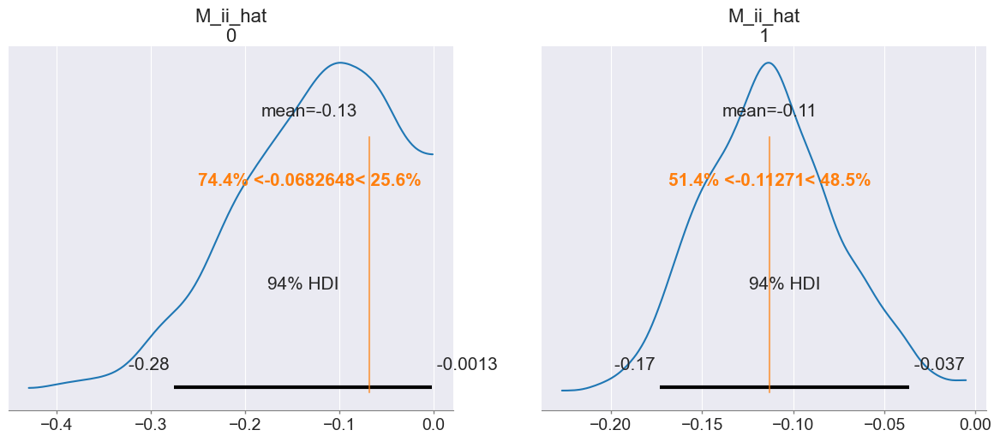
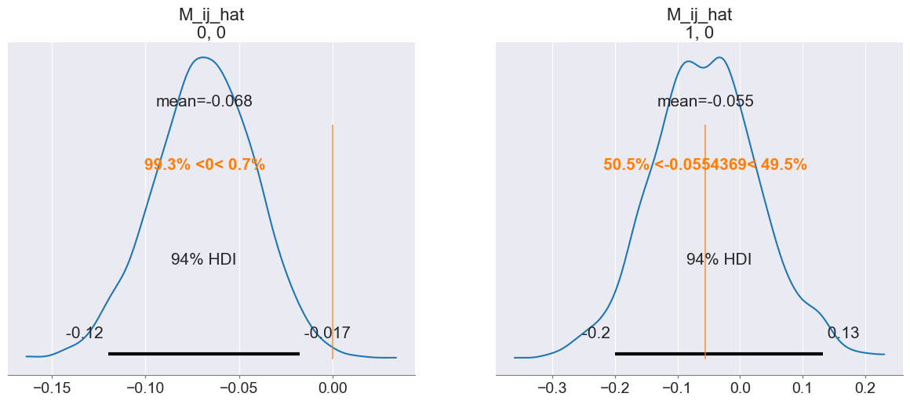
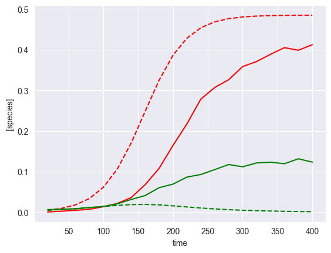
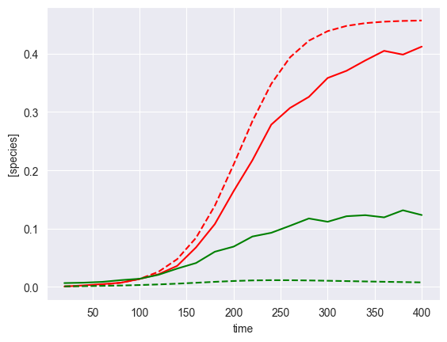

[1]:
from mimic.utilities import *
from mimic.model_infer.infer_gLV_bayes import *
from mimic.model_infer import *
from mimic.model_simulate import *
from mimic.model_simulate.sim_gLV import *
import pandas as pd
import numpy as np
import seaborn as sns
import matplotlib.pyplot as plt
import arviz as az
import matplotlib.pyplot as plt
import numpy as np
import pymc as pm
import pytensor.tensor as at
import pickle
import cloudpickle
WARNING (pytensor.tensor.blas): Using NumPy C-API based implementation for BLAS functions.
Repeat Rutter & Dekker et al 2024 analysis¶
[2]:
# Import and format the data
def get_data(input_data):
# Read the CSV file
d = pd.read_csv(input_data)
# Adjust for data size and number of species as necessary
# Here we take only time course up to t=400
X1_bar = d.iloc[1:21, 1:5].mean(axis=1)
# Calculate the mean of the second species
X2_bar = d.iloc[1:21, 5:9].mean(axis=1)
# Combine the first column with the calculated means
obs = pd.DataFrame({
'time': d.iloc[1:21, 0],
'X1_bar': X1_bar,
'X2_bar': X2_bar
})
# Replace negative values with 0
obs[obs < 0] = 0
return obs
PM3_EntA_data = get_data('PM3-EntA-coculture.csv')
[3]:
# Visualise the mean of the growth curves of both species grown in co-culture together
plot_growth_curves(PM3_EntA_data)

[4]:
# Extract data and convert to numpyarrays
yobsdf = PM3_EntA_data.iloc[:, [1,2]]
yobs = yobsdf.to_numpy()
timesa = PM3_EntA_data.iloc[:, 0]
times = timesa.to_numpy()
[5]:
plot_gLV(yobs, times)

[6]:
X, F = linearize_time_course_16S(yobs, times)
[ ]:
# Perform Bayesian inference without shrinkage
# Define priors
prior_mu_mean = 0.03
prior_mu_sigma = 0.5
## NB prior_Mii_mean is 0, so not defined as an argument
prior_Mii_mean = 0.1
prior_Mii_sigma = 0.1
prior_Mij_sigma = 0.1
# Sampling conditions
draws = 500
tune = 500
chains = 4
cores = 4
inference = infergLVbayes()
inference.set_parameters(X=X, F=F, prior_mu_mean=prior_mu_mean, prior_mu_sigma=prior_mu_sigma,
prior_Mii_sigma=prior_Mii_sigma, prior_Mii_mean=prior_Mii_mean,
prior_Mij_sigma=prior_Mij_sigma,
draws=draws, tune=tune, chains=chains,cores=cores)
idata = inference.run_bayes_gLV()
X shape: (19, 3)
F shape: (19, 2)
Number of species: 2
AdvancedSetSubtensor.0
Auto-assigning NUTS sampler...
Initializing NUTS using jitter+adapt_diag...
Multiprocess sampling (4 chains in 4 jobs)
NUTS: [sigma, mu_hat, M_ii_hat_p, M_ij_hat]
[8]:
# To plot posterior distributions
inference.plot_posterior(idata)



[9]:
# Print summary
summary = az.summary(idata, var_names=["mu_hat", "M_ii_hat", "M_ij_hat", "M_hat", "sigma"])
print(summary[["mean", "sd", "r_hat"]])
# Save posterior samples to file
az.to_netcdf(idata, 'model_posterior.nc')
/Users/chaniaclare/anaconda3/bin/python3.12/lib/python3.12/site-packages/arviz/stats/diagnostics.py:592: RuntimeWarning: invalid value encountered in scalar divide
(between_chain_variance / within_chain_variance + num_samples - 1) / (num_samples)
mean sd r_hat
mu_hat[0, 0] 0.033 0.003 1.00
mu_hat[0, 1] 0.015 0.003 1.00
M_ii_hat[0] -0.131 0.082 1.00
M_ii_hat[1] -0.113 0.037 1.00
M_ij_hat[0, 0] -0.068 0.027 1.01
M_ij_hat[1, 0] -0.055 0.087 1.00
M_hat[0, 0] -0.068 0.027 1.01
M_hat[0, 1] 0.000 0.000 NaN
M_hat[1, 0] -0.055 0.087 1.00
M_hat[1, 1] -0.113 0.037 1.00
sigma[0] 0.007 0.001 1.00
[9]:
'model_posterior.nc'
[10]:
# To compare predicted and observed curves
init_species_start = 0.005
sim_gLV_class = sim_gLV()
curve_compare(idata, F, times, yobs, init_species_start, sim_gLV_class)
Using the following parameters for gLV simulation: {'num_species': 2, 'mu': array([0.03293699, 0.01535046]), 'M': array([[-0.06793405, 0. ],
[-0.0570224 , -0.11398513]]), 'epsilon': array([], shape=(2, 0), dtype=float64)}

Perform Bayesian inference with shrinkage¶
[11]:
# Define priors
prior_mu_mean = 0.03
prior_mu_sigma = 0.5
prior_Mii_mean = 0.1
prior_Mii_sigma = 0.1
## NB prior_Mij_mean is 0, so not defined as an argument
prior_Mij_sigma = 0.1
# Define parameters for shrinkage on M_ij (non diagonal elements)
n_obs = times.shape[0] - 1
num_species = F.shape[1]
nX = num_species
noise_stddev = 0.1
DA = nX*nX - nX
DA0 = 1 # expected number of non zero entries in M_ij
N = n_obs - 2
# Sampling conditions
draws = 500
tune = 500
chains = 4
cores = 4
# Run inference
inference = infergLVbayes()
inference.set_parameters(X=X, F=F, prior_mu_mean=prior_mu_mean, prior_mu_sigma=prior_mu_sigma,
prior_Mii_sigma=prior_Mii_sigma, prior_Mii_mean=prior_Mii_mean,
prior_Mij_sigma=prior_Mij_sigma,
DA=DA, DA0=DA0, N=N, noise_stddev=noise_stddev,
draws=draws, tune=tune, chains=chains,cores=cores)
idata = inference.run_bayes_gLV_shrinkage()
Sampling 4 chains, 0 divergences ━━━━━━━━━━━━━╺━━━━━━━━━━━━━━━━━━━━━━━━━━ 33% 0:00:07 / 0:00:04
Sampling 4 chains for 500 tune and 500 draw iterations (2_000 + 2_000 draws total) took 10 seconds.
There were 96 divergences after tuning. Increase `target_accept` or reparameterize.
The rhat statistic is larger than 1.01 for some parameters. This indicates problems during sampling. See https://arxiv.org/abs/1903.08008 for details
The effective sample size per chain is smaller than 100 for some parameters. A higher number is needed for reliable rhat and ess computation. See https://arxiv.org/abs/1903.08008 for details
[12]:
# Print summary
summary = az.summary(idata, var_names=["mu_hat", "M_ii_hat", "M_ij_hat", "M_hat", "sigma"])
print(summary[["mean", "sd", "r_hat"]])
# Save posterior samples to file
az.to_netcdf(idata, 'model_posterior.nc')
mean sd r_hat
mu_hat[0, 0] 0.034 0.004 1.01
mu_hat[0, 1] 0.015 0.003 1.01
M_ii_hat[0] -0.129 0.080 1.01
M_ii_hat[1] -0.113 0.034 1.01
M_ij_hat[0, 0] -0.052 0.072 1.02
M_ij_hat[1, 0] -0.115 0.244 1.01
M_hat[0, 0] -0.052 0.072 1.02
M_hat[0, 1] 0.000 0.000 NaN
M_hat[1, 0] -0.115 0.244 1.01
M_hat[1, 1] -0.113 0.034 1.01
sigma[0] 0.007 0.001 1.01
/Users/chaniaclare/anaconda3/bin/python3.12/lib/python3.12/site-packages/arviz/stats/diagnostics.py:592: RuntimeWarning: invalid value encountered in scalar divide
(between_chain_variance / within_chain_variance + num_samples - 1) / (num_samples)
[12]:
'model_posterior.nc'
[21]:
init_species_start = 0.001
sim_gLV_class = sim_gLV()
curve_compare(idata, F, times, yobs, init_species_start, sim_gLV_class)
Using the following parameters for gLV simulation: {'num_species': 2, 'mu': array([0.03310294, 0.01519274]), 'M': array([[-0.07234264, 0. ],
[-0.03805635, -0.112146 ]]), 'epsilon': array([], shape=(2, 0), dtype=float64)}

[ ]: